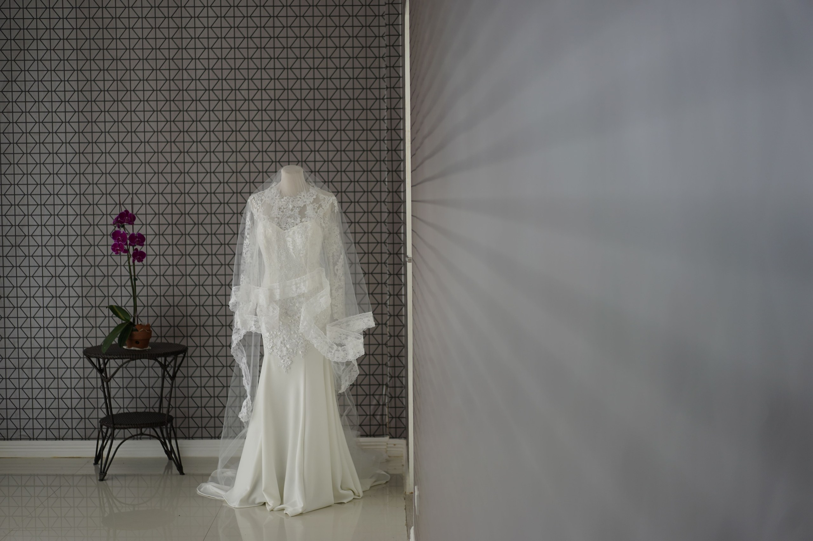

Everyday favourites
Shirts, trousers and dresses can be adjusted around comfort and proportion.
PERSONAL TAILORING. YOUR WAY.
Refine the wardrobe you have with personal measurements, thoughtful changes and careful garment handling.
Start with your garment ↗A MORE PERSONAL WARDROBE
Tell us where the fit feels wrong, what you want to keep and how you like to wear your garment.
Shirts, trousers and dresses can be adjusted around comfort and proportion.
Review the layers, shoes and movement needed for formal and traditional garments.
Discuss your fabric and design preferences before custom stitching begins.

MEASURE WITH PURPOSE
Measurements only make sense alongside the garment, its construction and your preferred fit. Save relevant details or request measurement assistance.
Manage measurement profiles ↗WHAT CAN CHANGE?
Consider the result you want before deciding on the work.
A trouser hem sits where you prefer without pooling fabric.
A shirt or dress follows a more comfortable silhouette.
A repaired seam or fastening lets a loved piece work again.
FROM FABRIC TO FIT
Discuss the design, review relevant measurements and clarify fabric choices before construction starts.
Explore custom stitching ↗THE CARE BEHIND THE WORK
Requirement review, considered construction and careful preparation for return.
Clear garment notes guide the work.
Construction and finishing are reviewed.
Garments are organised before arranging delivery.
PICKUP MADE PERSONAL
Choose garments and preferred collection windows. Confirm coverage and timing with the service team.
Combine trouser and shirt adjustments in one enquiry.
Include seam, button and zipper repairs with separate garment notes.
Share fabric information, design references and measurement needs.
YOUR QUESTIONS
Share any garment-specific questions with your request.
Estimates depend on fabric, garment construction, materials and the changes required. The final quote needs review by the service team.
Add each garment separately to your pickup request, with its own requirements and quantity.
A saved online request is not a confirmed pickup. Service coverage and scheduling must be confirmed separately.
Provide relevant measurements, use a saved measurement profile or request guidance. A reference garment can help explain your preferred fit.
FROM AN IDEA TO SOMETHING YOURS.
Explore custom stitching, alterations and repairs for the way you want to wear your clothes.